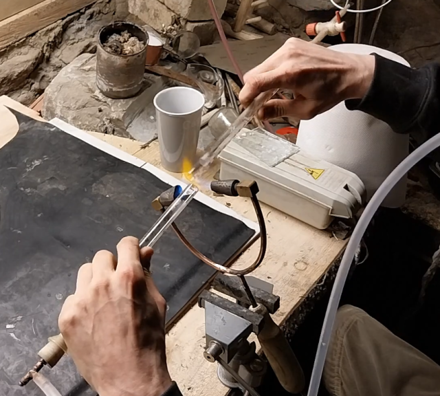

Gas and Glass
Lampworking referes to working of glass in an open flame, in contrast to glassblowing,
where glass is gathered on the end of a blowpipe.
A torch with some simple tools is all you need to get started. A guide for making those tools
can be found in the menu to the left.
Now all you need is gas and glass, but hopefully when the glass blowing section develops a
bit more. We can pull our own tubes for lampworking. And maybe the chemestry section,
could get started with a gasometer and wood gas?